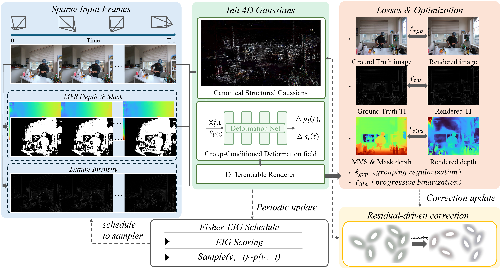

Reconstructing dynamic scenes from sparse multi-view videos remains challenging, as limited viewpoints severely under-constrain 4D geometry and often lead to unstable motion estimation and geometric collapse. We present SGS-4DGS, a sparsity-oriented 4D Gaussian splatting framework that improves spatiotemporal stability by explicitly modeling coherent motion structure and by leveraging reliable auxiliary cues. Our method maintains a canonical Gaussian set and introduces structure-aware grouping to organize primitives into coherent motion units. Conditioned on time and group descriptors, a group-conditioned deformation model generates time-varying Gaussians with reduced deformation ambiguity, while preserving local flexibility via lightweight residual updates. To further stabilize geometry and retain fine structures under sparse supervision, we incorporate reliability-filtered MVS depth and texture-intensity cues into sparsity-aware objectives. Beyond the representation and supervision design, we propose a Fisher-guided view--time scheduler that prioritizes informative observations during training, together with a residual-driven correction strategy that identifies persistent high-error regions and applies targeted updates to recover missing or unstable structures. Experiments on standard sparse-view dynamic benchmarks demonstrate that SGS-4DGS produces more stable 4D geometry and higher-fidelity novel-view synthesis than recent dynamic Gaussian splatting baselines, while retaining the efficiency of differentiable Gaussian rendering.

We report the latest sparse-view N3D metrics averaged across six scenes. Use the horizontal selector below to switch between the 2-view, 3-view, and 4-view summaries, shown as bar-chart panels for PSNR, SSIM, LPIPS, training time, and FPS.
Gold outlines mark the best method in each metric panel, and blue value tags call out SGS-4DGS.
Image-based comparisons highlight the visual differences between Ours and representative baselines across challenging scenes.
Ours vs. 3DGS
Ours vs. SpeedySplat